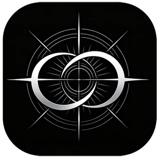
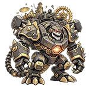

INFINITE WORLDS SIMULATOR
从小城江湖到未来战场，在四个截然不同的世界里探索、成长，迎接每一轮新的挑战。
每个世界都有独立的剧情、成长路线和强敌。
武侠
走镖攒钱，修习武功，在帮派争斗中追查幕后真相。
魔幻
选择职业、招募冒险者，收复失地并迎战魔王。

科幻
穿梭过去与未来，发展基地，抵挡机器军团的入侵。
修仙
经营麒麟宗，探索秘境，在宗门与天庭之间作出抉择。
分配每回合的行动值，用技能、天赋和装备打造自己的流派。